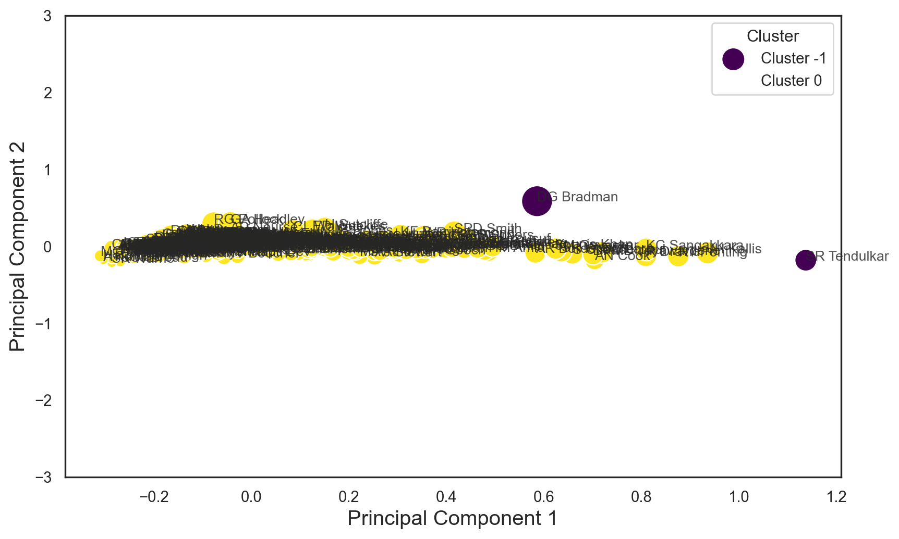
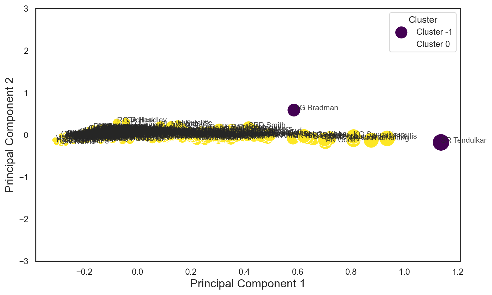

import pandas as pd
import numpy as np
import matplotlib.pyplot as pl
import seaborn as snsImporting libraries
Read the data
import pandas as pd
# Read the data
data = pd.read_csv('Cricket_data.txt', sep='\t')
# Display the first few rows of the data
data| Player | Span | Mat | Inn | NO | Runs | HS | Avg | 100 | 50 | 0 | Player Profile | |
|---|---|---|---|---|---|---|---|---|---|---|---|---|
| 0 | SR Tendulkar (INDIA) | 1989-2013 | 200 | 329 | 33 | 15921 | 248* | 53.78 | 51 | 68 | 14 | http://stats.espncricinfo.com/ci/content/playe... |
| 1 | RT Ponting (AUS) | 1995-2012 | 168 | 287 | 29 | 13378 | 257 | 51.85 | 41 | 62 | 17 | http://stats.espncricinfo.com/ci/content/playe... |
| 2 | JH Kallis (ICC/SA) | 1995-2013 | 166 | 280 | 40 | 13289 | 224 | 55.37 | 45 | 58 | 16 | http://stats.espncricinfo.com/ci/content/playe... |
| 3 | R Dravid (ICC/INDIA) | 1996-2012 | 164 | 286 | 32 | 13288 | 270 | 52.31 | 36 | 63 | 8 | http://stats.espncricinfo.com/ci/content/playe... |
| 4 | AN Cook (ENG) | 2006-2018 | 161 | 291 | 16 | 12472 | 294 | 45.35 | 33 | 57 | 9 | http://stats.espncricinfo.com/ci/content/playe... |
| ... | ... | ... | ... | ... | ... | ... | ... | ... | ... | ... | ... | ... |
| 2996 | CA Snedden (NZ) | 1947-1947 | 1 | - | - | - | - | - | - | - | - | http://stats.espncricinfo.com/ci/content/playe... |
| 2997 | VN Swamy (INDIA) | 1955-1955 | 1 | - | - | - | - | - | - | - | - | http://stats.espncricinfo.com/ci/content/playe... |
| 2998 | Usman Shinwari (PAK) | 2019-2019 | 1 | - | - | - | - | - | - | - | - | http://stats.espncricinfo.com/ci/content/playe... |
| 2999 | CM Willoughby (SA) | 2003-2003 | 2 | - | - | - | - | - | - | - | - | http://stats.espncricinfo.com/ci/content/playe... |
| 3000 | JW Wilson (AUS) | 1956-1956 | 1 | - | - | - | - | - | - | - | - | http://stats.espncricinfo.com/ci/content/playe... |
3001 rows × 12 columns
Identify null data
data.apply(pd.isnull).sum()/data.shape[0]Player 0.0
Span 0.0
Mat 0.0
Inn 0.0
NO 0.0
Runs 0.0
HS 0.0
Avg 0.0
100 0.0
50 0.0
0 0.0
Player Profile 0.0
dtype: float64data.describe(include='object')| Player | Span | Inn | NO | Runs | HS | Avg | 100 | 50 | 0 | Player Profile | |
|---|---|---|---|---|---|---|---|---|---|---|---|
| count | 3001 | 3001 | 3001 | 3001 | 3001 | 3001 | 3001 | 3001 | 3001 | 3001 | 3001 |
| unique | 2995 | 1140 | 198 | 49 | 1188 | 465 | 1598 | 40 | 57 | 35 | 3001 |
| top | Imran Khan (PAK) | 2019-2019 | 2 | 0 | 0 | 5 | - | 0 | 0 | 0 | http://stats.espncricinfo.com/ci/content/playe... |
| freq | 2 | 45 | 374 | 953 | 52 | 40 | 88 | 2203 | 1619 | 854 | 1 |
cricket=data[["Player","Span","Mat","Inn","Runs","Avg","100","50"]].copy()
cricket.columns=["player","span","mat","inn","runs","avg","100","50"]
cricket.head()| player | span | mat | inn | runs | avg | 100 | 50 | |
|---|---|---|---|---|---|---|---|---|
| 0 | SR Tendulkar (INDIA) | 1989-2013 | 200 | 329 | 15921 | 53.78 | 51 | 68 |
| 1 | RT Ponting (AUS) | 1995-2012 | 168 | 287 | 13378 | 51.85 | 41 | 62 |
| 2 | JH Kallis (ICC/SA) | 1995-2013 | 166 | 280 | 13289 | 55.37 | 45 | 58 |
| 3 | R Dravid (ICC/INDIA) | 1996-2012 | 164 | 286 | 13288 | 52.31 | 36 | 63 |
| 4 | AN Cook (ENG) | 2006-2018 | 161 | 291 | 12472 | 45.35 | 33 | 57 |
converting to numerical int data
# Convert the 'runs' column to a numeric data type (int)
cricket['runs'] = cricket['runs'].str.replace(',', '', regex=True).str.extract('(\d+)').astype(float)
# Filter the data to select players with more than 5000 runs
batsman = cricket[cricket['runs'] > 2000]
# Display the filtered data in column form
batsman.head()| player | span | mat | inn | runs | avg | 100 | 50 | |
|---|---|---|---|---|---|---|---|---|
| 0 | SR Tendulkar (INDIA) | 1989-2013 | 200 | 329 | 15921.0 | 53.78 | 51 | 68 |
| 1 | RT Ponting (AUS) | 1995-2012 | 168 | 287 | 13378.0 | 51.85 | 41 | 62 |
| 2 | JH Kallis (ICC/SA) | 1995-2013 | 166 | 280 | 13289.0 | 55.37 | 45 | 58 |
| 3 | R Dravid (ICC/INDIA) | 1996-2012 | 164 | 286 | 13288.0 | 52.31 | 36 | 63 |
| 4 | AN Cook (ENG) | 2006-2018 | 161 | 291 | 12472.0 | 45.35 | 33 | 57 |
# Use .loc to update the 'Player' column
batsman.loc[:, 'player'] = batsman['player'].str.replace(r'\s*\(.*\)', '', regex=True)
# Display the DataFrame with the country names removed
batsman.tail()| player | span | mat | inn | runs | avg | 100 | 50 | |
|---|---|---|---|---|---|---|---|---|
| 308 | CJL Rogers | 2008-2015 | 25 | 48 | 2015.0 | 42.87 | 5 | 14 |
| 309 | KOA Powell | 2011-2018 | 40 | 76 | 2011.0 | 26.81 | 3 | 6 |
| 310 | AC Hudson | 1992-1998 | 35 | 63 | 2007.0 | 33.45 | 4 | 13 |
| 311 | KL Rahul | 2014-2019 | 36 | 60 | 2006.0 | 34.58 | 5 | 11 |
| 312 | DN Sardesai | 1961-1972 | 30 | 55 | 2001.0 | 39.23 | 5 | 9 |
# List of names to delete
# Filter out rows with the specified names
batsman.head()| player | span | mat | inn | runs | avg | 100 | 50 | |
|---|---|---|---|---|---|---|---|---|
| 0 | SR Tendulkar | 1989-2013 | 200 | 329 | 15921.0 | 53.78 | 51 | 68 |
| 1 | RT Ponting | 1995-2012 | 168 | 287 | 13378.0 | 51.85 | 41 | 62 |
| 2 | JH Kallis | 1995-2013 | 166 | 280 | 13289.0 | 55.37 | 45 | 58 |
| 3 | R Dravid | 1996-2012 | 164 | 286 | 13288.0 | 52.31 | 36 | 63 |
| 4 | AN Cook | 2006-2018 | 161 | 291 | 12472.0 | 45.35 | 33 | 57 |
#to save the players name for future
player = batsman['player'].tolist()# Split the 'span' values into start and end years
batsman[['Start_Year', 'End_Year']] = batsman['span'].str.split('-', expand=True).astype(int)
# Calculate the duration in years
batsman['Span_yrs'] = batsman['End_Year'] - batsman['Start_Year'] + 1 # Adding 1 to include both start and end years
# Display the DataFrame with the duration calculated
batsmanC:\Users\mehra\AppData\Local\Temp\ipykernel_29440\1235120657.py:2: SettingWithCopyWarning:
A value is trying to be set on a copy of a slice from a DataFrame.
Try using .loc[row_indexer,col_indexer] = value instead
See the caveats in the documentation: https://pandas.pydata.org/pandas-docs/stable/user_guide/indexing.html#returning-a-view-versus-a-copy
C:\Users\mehra\AppData\Local\Temp\ipykernel_29440\1235120657.py:2: SettingWithCopyWarning:
A value is trying to be set on a copy of a slice from a DataFrame.
Try using .loc[row_indexer,col_indexer] = value instead
See the caveats in the documentation: https://pandas.pydata.org/pandas-docs/stable/user_guide/indexing.html#returning-a-view-versus-a-copy
C:\Users\mehra\AppData\Local\Temp\ipykernel_29440\1235120657.py:5: SettingWithCopyWarning:
A value is trying to be set on a copy of a slice from a DataFrame.
Try using .loc[row_indexer,col_indexer] = value instead
See the caveats in the documentation: https://pandas.pydata.org/pandas-docs/stable/user_guide/indexing.html#returning-a-view-versus-a-copy
| player | span | mat | inn | runs | avg | 100 | 50 | Start_Year | End_Year | Span_yrs | |
|---|---|---|---|---|---|---|---|---|---|---|---|
| 0 | SR Tendulkar | 1989-2013 | 200 | 329 | 15921.0 | 53.78 | 51 | 68 | 1989 | 2013 | 25 |
| 1 | RT Ponting | 1995-2012 | 168 | 287 | 13378.0 | 51.85 | 41 | 62 | 1995 | 2012 | 18 |
| 2 | JH Kallis | 1995-2013 | 166 | 280 | 13289.0 | 55.37 | 45 | 58 | 1995 | 2013 | 19 |
| 3 | R Dravid | 1996-2012 | 164 | 286 | 13288.0 | 52.31 | 36 | 63 | 1996 | 2012 | 17 |
| 4 | AN Cook | 2006-2018 | 161 | 291 | 12472.0 | 45.35 | 33 | 57 | 2006 | 2018 | 13 |
| ... | ... | ... | ... | ... | ... | ... | ... | ... | ... | ... | ... |
| 308 | CJL Rogers | 2008-2015 | 25 | 48 | 2015.0 | 42.87 | 5 | 14 | 2008 | 2015 | 8 |
| 309 | KOA Powell | 2011-2018 | 40 | 76 | 2011.0 | 26.81 | 3 | 6 | 2011 | 2018 | 8 |
| 310 | AC Hudson | 1992-1998 | 35 | 63 | 2007.0 | 33.45 | 4 | 13 | 1992 | 1998 | 7 |
| 311 | KL Rahul | 2014-2019 | 36 | 60 | 2006.0 | 34.58 | 5 | 11 | 2014 | 2019 | 6 |
| 312 | DN Sardesai | 1961-1972 | 30 | 55 | 2001.0 | 39.23 | 5 | 9 | 1961 | 1972 | 12 |
313 rows × 11 columns
#sns.pairplot(batsman)
#pl.show()batsman = batsman.drop(['player'], axis = 1)
batsman.head()| span | mat | inn | runs | avg | 100 | 50 | Start_Year | End_Year | Span_yrs | |
|---|---|---|---|---|---|---|---|---|---|---|
| 0 | 1989-2013 | 200 | 329 | 15921.0 | 53.78 | 51 | 68 | 1989 | 2013 | 25 |
| 1 | 1995-2012 | 168 | 287 | 13378.0 | 51.85 | 41 | 62 | 1995 | 2012 | 18 |
| 2 | 1995-2013 | 166 | 280 | 13289.0 | 55.37 | 45 | 58 | 1995 | 2013 | 19 |
| 3 | 1996-2012 | 164 | 286 | 13288.0 | 52.31 | 36 | 63 | 1996 | 2012 | 17 |
| 4 | 2006-2018 | 161 | 291 | 12472.0 | 45.35 | 33 | 57 | 2006 | 2018 | 13 |
columns=["runs","avg","100"]from sklearn.preprocessing import MinMaxScaler
from sklearn.decomposition import PCA
# Initialize PCA with the number of components you want to retain
n_components = 2 # Adjust as needed
pca = PCA(n_components=n_components)
# Initialize the MinMaxScaler
scaler = MinMaxScaler()
# Apply Min-Max scaling to your data
scaled_data = scaler.fit_transform(batsman[columns])
# Fit and transform PCA on the scaled data
batter = pca.fit_transform(scaled_data)
batterarray([[ 1.13670075e+00, -1.82729263e-01],
[ 8.75321769e-01, -1.30877512e-01],
[ 9.35142180e-01, -8.70045354e-02],
[ 8.08831970e-01, -1.26530872e-01],
[ 7.03738026e-01, -1.78727207e-01],
[ 8.09284250e-01, -4.18940850e-02],
[ 7.19007265e-01, -7.98234782e-02],
[ 6.58044190e-01, -9.63373931e-02],
[ 7.00634681e-01, -1.08532856e-01],
[ 5.82240976e-01, -8.54887301e-02],
[ 6.35566261e-01, -6.88147642e-02],
[ 6.21204290e-01, -4.15039454e-02],
[ 6.23562177e-01, -3.06646842e-02],
[ 4.86012399e-01, -6.80567045e-02],
[ 4.78482288e-01, -5.07045543e-02],
[ 3.49711940e-01, -1.05807708e-01],
[ 4.22201239e-01, 7.09635186e-03],
[ 4.36410575e-01, -2.37583474e-02],
[ 3.18311354e-01, -6.72827100e-02],
[ 3.98922157e-01, -1.22760487e-02],
[ 4.63460260e-01, -2.12393588e-02],
[ 4.94200326e-01, -1.54884051e-03],
[ 3.97784968e-01, -2.03217967e-02],
[ 4.11595125e-01, -8.49936300e-03],
[ 2.52759601e-01, -1.28646614e-01],
[ 2.97193751e-01, -6.80360904e-02],
[ 3.69858602e-01, -3.00213446e-02],
[ 3.55431580e-01, -2.38282724e-02],
[ 4.40235649e-01, 9.09731739e-02],
[ 3.03440651e-01, -8.68479045e-02],
[ 2.21940365e-01, -1.25007978e-01],
[ 3.17214012e-01, -6.64031613e-02],
[ 3.38137033e-01, -3.66661242e-02],
[ 3.17245763e-01, -4.82663512e-02],
[ 2.78200817e-01, -4.11042371e-02],
[ 3.69062571e-01, 4.56103502e-02],
[ 2.71924399e-01, -5.34496002e-02],
[ 2.83404989e-01, -1.85407673e-02],
[ 2.52763803e-01, -6.60081374e-02],
[ 2.92894703e-01, -4.70833527e-02],
[ 2.56694949e-01, 3.89172827e-03],
[ 2.92374334e-01, -2.52852532e-02],
[ 3.52777653e-01, 1.20050852e-01],
[ 2.00510975e-01, -6.07260431e-02],
[ 2.13121930e-01, -6.00755937e-02],
[ 4.01069794e-01, 8.71496429e-02],
[ 1.13944658e-01, -8.66499903e-02],
[ 4.16074387e-01, 1.73262952e-01],
[ 2.63970509e-01, -7.21896083e-03],
[ 3.54062899e-01, 7.58720777e-02],
[ 3.18936598e-01, 1.44001618e-02],
[ 2.63402775e-01, -6.48082748e-02],
[ 5.85703141e-01, 5.84233184e-01],
[ 1.67814319e-01, -7.68131906e-02],
[ 2.93985241e-01, 1.07322069e-01],
[ 2.08590232e-01, -4.90177477e-02],
[ 3.06051063e-01, 1.34954956e-01],
[ 1.99197620e-01, -1.82987624e-02],
[ 1.11038292e-01, -7.74426455e-02],
[ 2.70302899e-01, 7.03983125e-02],
[ 2.24753302e-01, -2.18777118e-02],
[ 2.37937445e-01, 7.43951700e-02],
[ 1.71516575e-01, 2.84534707e-02],
[ 2.50739437e-01, 6.50805930e-03],
[ 1.34761770e-01, -3.10642800e-02],
[ 2.47436703e-01, 4.46537845e-02],
[ 1.30354330e-01, -2.85513395e-02],
[ 1.58594113e-01, 3.71522229e-03],
[ 1.48815318e-01, -1.33142381e-02],
[ 1.24019178e-01, -4.12727110e-02],
[ 1.24663098e-01, -3.13294468e-04],
[ 1.85629487e-01, 7.05519019e-02],
[ 1.34196351e-01, 1.08424191e-03],
[ 9.67268701e-02, -7.03084841e-02],
[ 8.11669492e-02, -7.87750074e-02],
[ 1.92856717e-01, 6.70414073e-02],
[ 1.61525688e-01, -1.97660556e-02],
[ 5.51982786e-02, 8.72297332e-04],
[ 1.64561828e-01, 5.12280579e-02],
[-5.63216323e-02, -1.43608765e-01],
[ 1.16108164e-01, -4.06753844e-02],
[ 1.22993217e-01, -1.90388395e-02],
[ 1.25308938e-01, 6.51478158e-02],
[ 1.49850038e-01, 3.08138115e-02],
[ 1.66280553e-01, 1.56465921e-01],
[ 1.30945332e-01, 6.37002756e-02],
[ 9.56012752e-02, -1.52488738e-04],
[ 5.22296764e-02, -5.12432400e-02],
[ 9.55024657e-02, 5.34358444e-03],
[-2.85469478e-02, -1.24980298e-01],
[ 9.51430248e-02, 5.40921220e-02],
[ 5.43044368e-02, 4.66135110e-02],
[ 5.49316125e-02, -9.22064740e-02],
[ 6.40162889e-02, 1.71357227e-02],
[-6.91822648e-02, -7.27998661e-02],
[ 6.49404659e-02, 3.31196594e-02],
[ 4.16848801e-02, 3.36121818e-02],
[-4.60483317e-02, -3.81102827e-02],
[ 3.74427508e-02, 5.97595090e-02],
[ 7.70217291e-02, 1.14963654e-01],
[-7.28308233e-03, 2.59562426e-02],
[ 4.99800572e-03, -4.08073534e-02],
[ 3.74489464e-02, -4.73916263e-02],
[ 1.50730948e-01, 2.25227924e-01],
[ 6.29566251e-02, 4.41465395e-02],
[ 1.92162840e-02, 2.77618437e-02],
[ 5.90050071e-02, 7.18336680e-02],
[-9.37010533e-02, -1.15292862e-01],
[ 1.66533479e-02, -1.27832089e-02],
[ 1.04882160e-02, 8.23306757e-02],
[ 1.25017619e-01, 2.04606664e-01],
[-3.51686429e-02, -3.53392336e-02],
[-3.33203130e-02, -2.89499349e-02],
[-2.78771796e-02, -4.82999549e-02],
[ 5.09752212e-02, 7.15935693e-02],
[ 3.05707908e-02, 5.00116844e-02],
[-1.03161259e-01, -8.16155787e-02],
[ 9.50690872e-03, 2.89779826e-02],
[-1.37742915e-01, -1.39587368e-01],
[-3.09663426e-02, 2.81607412e-02],
[-3.17882804e-02, -9.10811903e-03],
[-6.30525410e-02, -5.64478295e-02],
[-1.64744822e-02, 1.09112487e-02],
[-1.86531070e-02, 4.47700974e-02],
[-9.05495012e-02, -4.99532519e-02],
[-3.17212656e-03, 6.17683961e-02],
[-2.92151942e-02, 2.86319397e-02],
[-3.29987356e-02, -1.14088300e-02],
[ 9.32502214e-04, 5.08163325e-02],
[-6.41176000e-02, 9.70949714e-03],
[ 4.64981022e-03, 7.20639348e-02],
[-1.00793197e-01, -4.80027367e-02],
[-1.33594606e-02, -3.80604174e-03],
[-6.44810409e-02, 1.97124662e-03],
[-1.01582093e-01, -6.66054740e-02],
[ 4.77527864e-03, 6.03066419e-02],
[-1.04353401e-01, 7.26931013e-03],
[-1.54904517e-02, 1.19777513e-01],
[-2.13155136e-02, 3.31641861e-02],
[-1.33940851e-01, -7.52033347e-02],
[-3.70762153e-02, 6.18159521e-02],
[-4.30558222e-02, -2.68204701e-02],
[-1.00785162e-01, -8.91099262e-03],
[-4.93782781e-02, 3.25936224e-02],
[ 8.50327792e-02, 2.04230466e-01],
[-8.37052893e-02, -2.83218323e-02],
[-1.73338229e-01, -6.94094621e-02],
[-1.39483037e-01, -3.51159593e-02],
[-1.10237579e-01, -1.99171854e-02],
[-2.79644061e-02, 9.37538280e-03],
[-2.92358982e-02, 4.19998092e-02],
[-5.76987734e-02, -1.80434866e-03],
[-5.23836652e-02, 1.51228734e-02],
[-1.89807213e-01, -1.27165736e-01],
[-1.24337466e-02, 9.64824283e-02],
[-1.59959287e-02, 5.00731529e-02],
[-7.71151065e-02, 2.06695374e-02],
[-1.43215467e-02, 9.43590174e-02],
[-7.53248253e-02, 2.88183343e-02],
[-4.42268526e-02, 1.44722844e-02],
[-3.03558681e-02, 5.82119166e-02],
[-4.82905409e-03, 9.94931287e-02],
[-6.46366057e-02, 1.08772634e-01],
[-9.02768209e-02, 1.92891162e-03],
[-1.07348836e-01, -4.56245038e-02],
[-4.98687428e-02, 1.24762562e-01],
[-1.48912865e-01, -8.65893814e-02],
[-1.26517686e-01, -5.64549279e-02],
[-1.36268939e-01, -4.49920305e-02],
[-1.01980107e-01, 2.07186248e-02],
[-1.45892677e-01, -6.49023852e-02],
[-1.06175106e-01, -5.69822619e-02],
[-1.59342903e-01, -5.69394183e-02],
[-1.53453225e-01, -3.95791577e-02],
[-4.88700215e-02, 1.04917933e-02],
[-1.45727854e-01, -1.07854340e-02],
[-1.06352192e-01, 3.26190214e-02],
[-1.70962087e-01, -4.45642294e-02],
[-1.42249461e-01, 4.51630471e-03],
[-7.55115604e-02, 9.02981428e-02],
[-1.12477158e-01, 2.61421179e-02],
[-7.59413286e-02, 6.04689287e-02],
[-8.69020379e-02, 3.42445608e-02],
[-1.02271036e-01, 2.73806094e-02],
[-2.68864590e-01, -2.00029327e-01],
[-2.86520521e-01, -2.14198910e-01],
[-2.25452276e-01, -1.04815797e-01],
[-1.32292554e-01, 2.11530049e-02],
[-1.42249437e-01, 3.00948794e-02],
[-1.02626094e-01, 7.28130956e-02],
[-2.50641097e-01, -1.35309927e-01],
[-5.29295038e-02, 1.13407733e-01],
[-1.58590267e-01, -9.03978657e-03],
[-2.03608949e-01, -6.06827622e-02],
[-1.26924024e-01, 5.48780624e-02],
[-1.43919725e-01, 4.55935992e-02],
[-1.02489592e-01, 9.30043864e-02],
[-1.28970950e-01, 2.14295364e-02],
[-4.39949198e-02, 1.95130005e-01],
[-1.33024424e-01, 1.05987490e-02],
[-1.19805928e-01, 5.26291385e-02],
[-1.07319127e-01, 9.11447684e-02],
[-2.16068579e-01, -1.10363602e-01],
[-2.40983666e-01, -1.46198996e-01],
[-1.09911988e-01, 5.36668034e-02],
[-1.92343195e-01, -3.90396382e-02],
[-2.41663811e-01, -1.06260465e-01],
[-1.44061806e-01, 3.14868431e-02],
[-2.38509215e-01, -9.59233679e-02],
[-1.90723968e-01, -2.94577108e-02],
[-2.22351297e-01, -4.48781044e-02],
[-1.71609027e-01, -4.94255754e-03],
[-1.81142012e-01, 3.99719854e-03],
[-1.38848287e-01, 2.02334417e-02],
[-1.61748373e-01, -7.32973325e-03],
[-1.39057322e-01, 5.90798438e-02],
[-1.97419319e-01, -7.23017753e-02],
[-1.22366374e-01, 1.08861418e-01],
[-1.61641041e-01, -4.21662694e-03],
[-1.50950310e-01, 9.90770766e-02],
[-8.29475683e-02, 1.16969853e-01],
[-2.44079212e-01, -9.46656428e-02],
[-1.14664628e-01, 6.28913691e-02],
[-1.13890217e-01, 1.38772301e-01],
[-2.13791166e-01, -7.62805955e-02],
[-2.00066472e-01, -3.62921717e-02],
[-2.05633018e-01, -1.24261225e-01],
[-1.58233136e-01, 5.05068454e-02],
[-1.44933514e-01, 1.98279429e-02],
[-1.17860810e-01, 9.87168979e-02],
[-1.93899118e-01, -4.49660165e-02],
[-1.65019623e-01, 3.86155096e-02],
[-1.96197514e-01, 2.34419613e-02],
[-1.25169178e-01, 4.98977030e-02],
[-2.01190115e-01, 1.09500683e-02],
[-1.84487903e-01, -4.76000375e-02],
[-1.68304443e-01, 3.69418970e-03],
[-2.36230756e-01, -4.60697666e-02],
[-1.90865514e-01, -2.28898820e-02],
[-2.31131020e-01, -6.30828384e-02],
[-1.81762411e-01, 8.48127980e-03],
[-2.35609682e-01, -7.44408202e-02],
[-2.19295103e-01, -6.32691992e-02],
[-1.43144301e-01, 8.56440727e-02],
[-2.02597702e-01, -1.08410609e-02],
[-2.10164191e-01, 6.93161286e-03],
[-1.84098558e-01, -2.59777347e-02],
[-1.27391701e-01, 1.39197844e-01],
[-1.34746574e-01, 1.19182741e-01],
[-2.40977524e-01, -7.01386845e-03],
[-3.04343935e-01, -1.88269267e-01],
[-1.70483822e-01, 5.76983105e-02],
[-2.25509960e-01, 9.59529205e-03],
[-1.70884643e-01, -1.32493649e-02],
[-1.56938123e-01, 6.33259168e-02],
[-2.45819849e-01, -8.43067466e-02],
[-1.50875008e-01, 4.76936015e-02],
[-2.00826441e-01, -2.25754423e-02],
[-1.60152570e-01, 5.91229952e-02],
[-1.39644679e-01, 8.22300480e-02],
[-2.84686151e-01, -1.55879310e-01],
[-1.32845485e-01, 6.67964409e-02],
[-2.23402731e-01, -4.51739753e-02],
[-2.30523652e-01, -2.87423947e-02],
[-2.30839904e-01, -6.31492308e-02],
[-2.63390363e-01, -7.87829661e-02],
[-2.53824405e-01, -4.67758206e-02],
[-1.51330876e-01, 7.03787668e-02],
[-2.38368456e-01, -3.49304754e-02],
[-1.31774552e-01, 1.29486949e-01],
[-2.70010492e-01, -5.12693201e-02],
[-2.00049112e-01, 4.24206292e-02],
[-2.51789420e-01, -1.05608031e-01],
[-2.37992284e-01, -2.89385931e-02],
[-1.90299859e-01, 2.71433765e-03],
[-7.75759880e-02, 2.93725403e-01],
[-2.72648299e-01, -4.90765877e-02],
[-3.03942638e-01, -1.73826635e-01],
[-2.21223814e-01, -4.31169568e-02],
[-2.37104171e-01, -5.00561938e-02],
[-2.68872316e-01, -1.04632605e-01],
[-2.42667274e-01, -2.87751158e-02],
[-1.30937058e-01, 1.50826785e-01],
[-4.31451338e-02, 2.96363186e-01],
[-2.66167671e-01, -8.96383641e-02],
[-1.90864464e-01, 9.18972158e-02],
[-1.50405965e-01, 1.39655359e-01],
[-1.56085829e-01, 8.88819993e-02],
[-2.40935751e-01, -4.65809019e-02],
[-1.32275563e-01, 1.59224741e-01],
[-2.25448586e-01, -3.72733315e-02],
[-2.73814192e-01, -3.12451566e-02],
[-2.21513790e-01, -2.39821732e-02],
[-2.03866113e-01, -8.08447755e-03],
[-2.59223011e-01, -5.88947121e-02],
[-2.09465593e-01, 1.36171240e-02],
[-2.86123021e-01, -2.55919894e-02],
[-2.56753409e-01, -4.82583960e-02],
[-3.09616140e-01, -1.26234724e-01],
[-2.68088023e-01, -4.18939597e-02],
[-1.66007669e-01, 1.44733391e-01],
[-2.01302909e-01, 4.27978675e-02],
[-2.52625109e-01, -3.23060403e-02],
[-1.53601252e-01, 1.10774059e-01],
[-2.69880419e-01, -8.14601869e-03],
[-2.16190473e-01, 3.90762892e-02],
[-2.62325277e-01, -2.03452153e-02],
[-2.54593920e-01, -3.18602911e-02],
[-1.83252540e-01, 1.02987783e-01],
[-2.69443502e-01, -7.29951410e-02],
[-2.31882686e-01, 6.29274598e-05],
[-2.14927746e-01, 1.30839656e-02],
[-1.97660937e-01, 6.38278913e-02]])explained_variance = pca.explained_variance_ratio_
print("Explained variance ratio:", explained_variance)Explained variance ratio: [0.88180887 0.10154978]pl.scatter(batter[:, 0], batter[:, 1])
pl.xlabel('Principal Component 1')
pl.ylabel('Principal Component 2')
pl.title('PCA Results')
pl.show()
component_loadings = pca.components_
print("Principal component loadings:", component_loadings)Principal component loadings: [[ 0.69313653 0.31121587 0.65015878]
[-0.43688304 0.89881675 0.03551987]]from sklearn.cluster import DBSCAN
from sklearn.metrics import silhouette_score
# Your data
X = batter # Your data points
best_eps = None
best_min_samples = None
best_score = -1
for eps in np.arange(0.1, 1.0, 0.1): # Adjust the range as needed
for min_samples in range(2, 11): # Adjust the range as needed
dbscan = DBSCAN(eps=eps, min_samples=min_samples)
labels = dbscan.fit_predict(X)
if len(set(labels)) > 1: # Ensure more than one cluster is formed
score = silhouette_score(X, labels)
if score > best_score:
best_score = score
best_eps = eps
best_min_samples = min_samples
print(f"Best eps: {best_eps}, Best min_samples: {best_min_samples}, Best Silhouette Score: {best_score}")Best eps: 0.2, Best min_samples: 2, Best Silhouette Score: 0.6825550599476355from sklearn.cluster import DBSCAN
# Initialize DBSCAN
dbscan = DBSCAN(eps=0.2, min_samples=2)
# Fit DBSCAN on the PCA-transformed data
cluster_labels = dbscan.fit_predict(batter)
pl.scatter(batter[:, 0], batter[:, 1], c=cluster_labels, cmap='viridis')
pl.xlabel('Principal Component 1')
pl.ylabel('Principal Component 2')
pl.title('DBSCAN Clustering Results')
pl.show()
# Assuming 'player' contains the player names and 'cluster_labels' contains the cluster assignments
# Create a new DataFrame to combine the results
new_batsman = pd.DataFrame({'x': batter[:, 0], 'y': batter[:, 1], 'cluster': cluster_labels, 'player': player})
# Display the resulting DataFrame
new_batsman| x | y | cluster | player | |
|---|---|---|---|---|
| 0 | 1.136701 | -0.182729 | -1 | SR Tendulkar |
| 1 | 0.875322 | -0.130878 | 0 | RT Ponting |
| 2 | 0.935142 | -0.087005 | 0 | JH Kallis |
| 3 | 0.808832 | -0.126531 | 0 | R Dravid |
| 4 | 0.703738 | -0.178727 | 0 | AN Cook |
| ... | ... | ... | ... | ... |
| 308 | -0.183253 | 0.102988 | 0 | CJL Rogers |
| 309 | -0.269444 | -0.072995 | 0 | KOA Powell |
| 310 | -0.231883 | 0.000063 | 0 | AC Hudson |
| 311 | -0.214928 | 0.013084 | 0 | KL Rahul |
| 312 | -0.197661 | 0.063828 | 0 | DN Sardesai |
313 rows × 4 columns
# Create a scatter plot with cluster labels
pl.figure(figsize=(10, 6))
ax = sns.scatterplot(x="x", y="y", hue="cluster", data=new_batsman, palette="viridis", s=100)
# Add labels for individual data points
for x, y, player, cluster in zip(new_batsman['x'], new_batsman['y'], new_batsman['player'], new_batsman['cluster']):
pl.text(x, y, player, fontsize=10, alpha=0.8)
# Set the plot limits and labels
ax.set(ylim=(-3, 3))
pl.xlabel("Principal Component 1", fontsize=15)
pl.ylabel("Principal Component 2", fontsize=15)
# Show the legend
pl.legend(title='Cluster', loc='upper right', labels=[f'Cluster {label}' for label in new_batsman['cluster'].unique()])
# Display the plot
pl.show()
import seaborn as sns
import matplotlib.pyplot as plt
from sklearn.preprocessing import MinMaxScaler
# Set the style
sns.set(style="white")
# Normalize the "average" values
scaler = MinMaxScaler()
batsman['avg_normalized'] = scaler.fit_transform(batsman[['avg']])
# Create a scatter plot with cluster labels and manually set marker size based on "average" values
plt.figure(figsize=(10, 6))
ax = sns.scatterplot(x="x", y="y", hue="cluster", data=new_batsman, palette="viridis", sizes=(50, 500), size=batsman['avg_normalized'])
# Add labels for individual data points
for x, y, player, cluster in zip(new_batsman['x'], new_batsman['y'], new_batsman['player'], new_batsman['cluster']):
plt.text(x, y, player, fontsize=10, alpha=0.8)
# Set the plot limits and labels
ax.set(ylim=(-3, 3))
plt.xlabel("Principal Component 1", fontsize=15)
plt.ylabel("Principal Component 2", fontsize=15)
# Show the legend
plt.legend(title='Cluster', loc='best', labels=[f'Cluster {label}' for label in new_batsman['cluster'].unique()])
# Display the plot
plt.show()
import seaborn as sns
import matplotlib.pyplot as plt
from sklearn.preprocessing import MinMaxScaler
# Set the style
sns.set(style="white")
# Normalize the "average" values
scaler = MinMaxScaler()
batsman['100_normalized'] = scaler.fit_transform(batsman[['100']])
# Create a scatter plot with cluster labels and manually set marker size based on "average" values
plt.figure(figsize=(10, 6))
ax = sns.scatterplot(x="x", y="y", hue="cluster", data=new_batsman, palette="viridis", sizes=(50, 500), size=batsman['100_normalized'])
# Add labels for individual data points
for x, y, player, cluster in zip(new_batsman['x'], new_batsman['y'], new_batsman['player'], new_batsman['cluster']):
plt.text(x, y, player, fontsize=10, alpha=0.8)
# Set the plot limits and labels
ax.set(ylim=(-3, 3))
plt.xlabel("Principal Component 1", fontsize=15)
plt.ylabel("Principal Component 2", fontsize=15)
# Show the legend
plt.legend(title='Cluster', loc='upper right', labels=[f'Cluster {label}' for label in new_batsman['cluster'].unique()])
# Display the plot
plt.show()